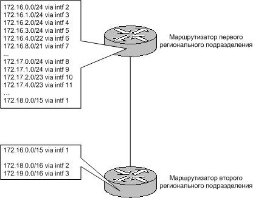
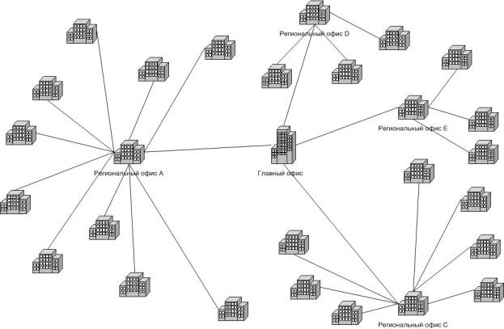

Повесть об IP-адресации
Автор (С): Иван Песин
Оглавление
- Введение
- Адреса
протокола IP
- Классическая
адресная схема протокола IP
- Зарезервированные
адреса
- Организация
подсетей
- Маска
подсети переменной длины (VLSM)
- Проблемы
классической схемы
- Бесклассовая
междоменная маршрутизация (CIDR)
- Примеры
Стек протоколов TCP/IP тесно связан с сетью Internet, ее историей и
современностью. Создан он был в 1969 году, когда для сети ARPANET понадобился
ряд стандартов для объединения в единую сеть компьютеров с различными
архитектурами и операционными системами. На базе этих стандартов и был
разработан набор протоколов, получивших название TCP/IP.
Вместе с ростом Internet протокол TCP/IP завоевывал позиции и в других сетях.
На сегодняшний день этот сетевой протокол используется как для связи компьютеров
всемирной сети, так и в подавляющем большинстве корпоративных сетей.
В наши дни используется версия протокола IP, известная как IPv4. В статье мы
рассмотрим стандартную схему адресации и более новые методы рационального
использования адресного пространства, введенные в результате обнаруженных
недостатков в реализации протокола IP.
Согласно спецификации протокола, каждому узлу, подсоединенному к IP-сети,
присваивается уникальный номер. Узел может представлять собой компьютер,
маршрутизатор, межсетевой экран и др. Если один узел имеет несколько физических
подключений к сети, то каждому подключению должен быть присвоен свой уникальный
номер.
Этот номер, или по-другому IP-адрес, имеет длину в четыре октета, и состоит
из двух частей. Первая часть определяет сеть, к которой принадлежит узел, а
вторая -- уникальный адрес самого узла внутри сети.
|
Номер сети |
Номер узла |
|
11011100 |
11010111 |
00001110 |
00010110 |
В классической реализации протокола первую часть адреса называли "сетевым
префиксом", поскольку она однозначно определяла сеть. Однако в современной
реализации это уже не так и сеть идентифицируют другим образом, речь о чем
пойдет ниже.
Изначально все адресное пространство разделили на пять классов: A, B, C, D и
Е. Такая схема получила название "классовой". Каждый класс однозначно
идентифицировался первыми битами левого байта адреса. Сами же классы отличались
размерами сетевой и узловой частей. Зная класс адреса, вы могли определить
границу между его сетевой и узловой частями. Кроме того, такая схема позволяла
при маршрутизации не передавать вместе с пакетом информацию о длине сетевой
части IP-адреса.
|
Класс А |
|
|
|
|
|
Номер бита
|
0 |
8 |
16 |
24 31
|
|
Адрес |
0.......
|
........
|
........
|
........
|
|
Сетевая часть
|
|
|
|
|
| |
|
|
|
|
|
Класс В |
|
|
|
|
|
Номер бита
|
0 |
8 |
16 |
24 31
|
|
Адрес |
10......
|
........
|
........
|
........
|
|
Сетевая часть
|
|
|
|
|
| |
|
|
|
|
|
Класс С |
|
|
|
|
|
Номер бита
|
0 |
8 |
16 |
24 31
|
|
Адрес |
110.....
|
........
|
........
|
........
|
|
Сетевая часть
|
|
|
|
|
| |
|
|
|
|
|
Класс D |
|
|
|
|
|
Номер бита
|
0 |
8 |
16 |
24 31
|
|
Адрес |
1110....
|
........
|
........
|
........
|
| |
|
|
|
|
|
Класс E |
|
|
|
|
|
Номер бита
|
0 |
8 |
16 |
24 31
|
|
Адрес |
1111....
|
........
|
........
|
........
|
Рис. 1
Класс А ориентирован на очень большие сети. Все адреса, принадлежащие этому
классу, имеют 8-битный сетевой префикс, на что указывает первый бит левого байта
адреса установленный в нуль. Соответственно, на идентификацию узла отведено 24
бита и каждая сеть "восьмерка" может содержать до 224-2 узлов. Два
адреса необходимо отнять, поскольку адреса, содержащие в правом октете все нули
(идентифицирует указанную сеть) и все единицы (широковещательный адрес)
используются в служебных целях и не могут быть присвоены узлам.
Самих же сетей "восьмерок" может быть 27-2. Снова мы вычитаем
двойку, но это уже две служебных сети: 127/8 и 0/8 (по-старому: 127.0.0.0 и
0.0.0.0).
Наконец, можно заметить, что класс А содержит всего 27 *
224 = 231 адресов, или половину всех возможных IP-адресов.
Класс В предназначен для сетей большого и среднего размеров. Адреса этого
класса идентифицируются двумя старшими битами, равными соответственно 1 и 0.
Сетевой префикс класса состоит из шестнадцати бит или первых двух октетов
адреса.
Поскольку два первых бита сетевого префикса заняты определяющим класс ключом,
то можно задать лишь 214 различных сетей. Узлов же в каждой сети
можно определить до 216-2.
В некоторых источниках, для определения количества возможных сетей
используется формула 2х-2 для всех классов, а не только для А. Это
связано с определенными причинами, которые более детально будут изложены ниже.
На сегодняшний день нет никакой необходимости уменьшать количество возможных
сетей на две.
Проведя вычисления, аналогичные приведенным для класса А, мы увидим, что
класс В занимает четверть адресного пространства протокола IP.
Наконец, самый употребляемый класс сетей – класс С – имеет 24 битный
сетевой префикс, определяется старшими битами, установленными в 110, и может
идентифицировать до 221 сетей. Соответственно, класс позволяет
адресовать до 28-2 узлов. Занимает восьмую часть адресного
пространства протокола TCP/IP.
Последние два класса занимают оставшуюся восьмую часть в адресном
пространстве и предназначены для служебного (класс D) и экспериментального
(класс Е) использования. Для класса D старшие четыре бита адреса установлены в
1110, для класса Е -- 1111. Сегодня класс D используется для групповой передачи
информации.
Поскольку длинные последовательности из единиц и нулей трудно запомнить, IP
адреса обычно записывают в десятичной форме. Для этого каждый октет адреса
представляется в виде десятичного числа. Между собой октеты отделяются точкой.
Иногда октеты обозначаются как w.x.y.z и называются "z-октет", "y-октет",
"x-октет" и "w-октет".
Представление IP-адреса в виде четырех десятичных чисел разделенных точками и
называется "точечно-десятичная нотация".
|
Октет |
W |
X |
Y |
Z |
|
Номер бита |
0 |
8 |
16 |
24 31
|
|
Адрес |
11011100
|
11010111
|
00001110
|
00010110
|
| |
220 |
215 |
14 |
22 |
|
Точечно-десятичный формат |
220.215.14.22 |
Рис. 2
На рис. 2 показано, как IP-адрес представляется в точечно-десятичной нотации.
Подытожим информацию о классах сетей в таблице:
|
Класс |
Количество сетей |
Количество узлов |
Десятичный диапазон |
|
A |
27 – 2 (126) |
224 – 2 (2 147 483 648) |
1.ххх.ххх.ххх |
- 126.ххх.ххх.ххх |
|
B |
214 (16 384) |
216 – 2 (65 534) |
128.0.ххх.ххх |
- 191.255.ххх.ххх |
|
C |
221 (2 097 152) |
28 – 2 (254) |
192.0.0.ххх |
- 223.255.255.ххх |
|
D |
- |
- |
224.0.0.ххх |
- 239.255.255.ххх |
|
E |
- |
- |
240.0.0.ххх |
- 254.255.255.ххх |
Рис. 3
Как уже отмечалось, в адресной схеме протокола выделяют особые IP-адреса.
Если биты всех октетов адреса равны нулю, то он обозначает адрес того узла,
который сгенерировал данный пакет. Это используется в ограниченных случаях,
например в некоторых сообщениях протокола IP.
Если биты сетевого префикса равны нулю, полагается, что узел назначения
принадлежит той же сети, что и источник пакета.
Когда биты всех октетов адреса назначения равны двоичной единице, пакет
доставляется всем узлам, принадлежащим той же сети, что и отправитель пакета.
Такая рассылка называется ограниченным широковещанием.
Наконец, если в битах адреса, соответствующих узлу назначения, стоят единицы,
то такой пакет рассылается всем узлам указанной сети. Это называется
широковещанием.
Специальное значение имеет, так же, адреса сети 127/8. Они используются для
тестирования программ и взаимодействия процессов в пределах одной машины.
Пакеты, отправленные на этот интерфейс, обрабатываются локально, как входящие.
Потому адреса из этой сети нельзя присваивать физическим сетевым интерфейсам.
Очень редко в локальную вычислительную сеть входит более 100-200 узлов: даже
если взять сеть с большим количеством узлов, многие сетевые среды
накладывают ограничения, например, в 1024 узла. Исходя из этого,
целесообразность использования сетей класса А и В весьма сомнительна. Да и
использование класса С для сетей, состоящих из 20-30 узлов, тоже является
расточительством.
Для решения этих проблем в двухуровневую иерархию IP-адресов (сеть --
узел) была введена новая составляющая -- подсеть. Идея заключается в
"заимствовании" нескольких битов из узловой части адреса для определения
подсети.
Полный префикс сети, состоящий из сетевого префикса и номера подсети, получил
название расширенного сетевого префикса. Двоичное число, и его десятичный
эквивалент, содержащее единицы в разрядах, относящихся к расширенному сетевому
префиксу, а в остальных разрядах -- нули, назвали маской подсети.
| |
|
Сетевой префикс |
подсеть |
узел |
|
IP адрес |
144.144.19.22 |
10010000 |
10010000 |
00010011 |
00010110 |
|
Маска |
255.255.255.0 |
11111111 |
11111111 |
11111111 |
00000000 |
| |
|
Расширенный сетевой префикс |
|
Рис.4
Но маску в десятичном представлении удобно использовать лишь тогда, когда
расширенный сетевой префикс заканчивается на границе октетов, в других случаях
ее расшифровать сложнее. Допустим, что в примере на рис. 4 мы хотели бы для
подсети использовать не 8 бит, а десять. Тогда в последнем (z-ом) октете мы
имели бы не нули, а число 11000000. В десятичном представлении получаем
255.255.255.192. Очевидно, что такое представление не очень удобно. В наше время
чаще используют обозначение вида "/xx", где хх -- количество бит в расширенном
сетевом префиксе. Таким образом, вместо указания: "144.144.19.22 с маской
255.255.255.192", мы можем записать: 144.144.19.22/26. Как видно, такое
представление более компактно и понятно.
Однако вскоре стало ясно, что подсети, несмотря на все их достоинства,
обладают и недостатками. Так, определив однажды маску подсети, приходится
использовать подсети фиксированных размеров. Скажем, у нас есть сеть
144.144.0.0/16 с расширенным префиксом /23.
| |
|
Сетевой префикс |
Подсеть |
Узел |
|
144.144.0.0/23 |
<--> |
10010000 |
10010000 |
0000000 |
0 00000000
|
| |
|
Расширенный сетевой префикс |
|
Такая схема позволяет создать 27 подсетей размером в 29
узлов каждая. Это подходит к случаю, когда есть много подсетей с большим
количеством узлов. Но если среди этих сетей есть такие, количество узлов в
которых находится в пределах ста, то в каждой их них будет пропадать около 400
адресов.
Решение состоит в том, что бы для одной сети указывать более одного
расширенного сетевого префикса. О такой сети говорят, что это сеть с маской
подсети переменной длины (VLSM).
Действительно, если для сети 144.144.0.0/16 использовать расширенный сетевой
префикс /25, то это больше бы подходило сетям размерами около ста узлов. Если
допустить использование обеих масок, то это бы значительно увеличило гибкость
применения подсетей.
Общая схема разбиения сети на подсети с масками переменной длины такова: сеть
делится на подсети максимально необходимого размера. Затем некоторые подсети
делятся на более мелкие, и рекурсивно далее, до тех пор, пока это необходимо.
Кроме того, технология VLSM, путем скрытия части подсетей, позволяет
уменьшить объем данных, передаваемых маршрутизаторами. Так, если сеть 12/8
конфигурируется с расширенным сетевым префиксом /16, после чего сети 12.1/16 и
12.2/16 разбиваются на подсети /20, то маршрутизатору в сети 12.1 незачем знать
о подсетях 12.2 с префиксом /20, ему достаточно знать маршрут на сеть 12.1/16.
В середине 80-х годов Internet впервые столкнулся с проблемой переполнения
таблиц магистральных маршрутизаторов. Решение, однако, было быстро найдено --
подсети устранили проблему на несколько лет. Но уже в начале 90-х к проблеме
большого количества маршрутов прибавилась нехватка адресного пространства.
Ограничение в 4 миллиарда адресов, заложенное в протокол и казавшееся
недосягаемой величиной, стало весьма ощутимым.
В качестве решения проблемы были одновременно предложены два подхода -- один
на ближайшее будущее, другой комплексный и долгосрочный. Первое решение -- это
внедрение протокола бесклассовой маршрутизации (CIDR), к которому позже
присоединилась система NAT.
Долгосрочное решение -- это протокол IP следующей версии. Он обозначается,
как IPv6, или IPng (Internet Protocol next generation). В этой реализации
протокола длина адреса увеличена до 16-ти байтов (128 бит!), исключены некоторые
элементы действующего протокола, которые оказались неиспользуемыми.
Новая версия обеспечит, как любят указывать, плотность в 3 911 873 538 269
506 102 IP адресов на квадратный метр поверхности Земли.
Однако то, что и в 2000-м году протокол все еще проходил стандартизацию, и
то, что протокол CIDR вместе с системой NAT оказались эффективным решением,
заставляет думать, что переход с IPv4 на IPng потребует очень много времени.
Появление этой технологии было вызвано резким увеличением объема трафика в
Internet и, как следствие, увеличением количества маршрутов на магистральных
маршрутизаторах. Так, если в 1994 году, до развертывания CIDR, таблицы
маршрутизаторов содержали до 70 000 маршрутов, то после внедрения их количество
сократилось до 30 000. На сентябрь 2002, количество маршрутов перевалило за
отметку 110 000! Можете себе представить, сколько маршрутов нужно было бы
держать в таблицах сегодня, если бы не было CIDR!
Что же представляет собой эта технология? Она позволяет уйти от классовой
схемы адресации, эффективней использовать адресное пространство протокола
IP. Кроме того, CIDR позволяет агрегировать маршрутные записи. Одной записью в
таблице маршрутизатора описываются пути ко многим сетям.
Суть технологии CIDR состоит в том, что каждому поставщику услуг Internet
(или, для корпоративных сетей, какому-либо структурно-территориальному
подразделению) должен быть назначен неразрывный диапазон IP-адресов. При этом
вводится понятие обобщенного сетевого префикса, определяющего общую часть всех
назначенных адресов. Соответственно, маршрутизация на магистральных каналах
может реализовываться на основе обобщенного сетевого префикса. Результатом
является агрегирование маршрутных записей, уменьшение размера таблиц маршрутных
записей и увеличение скорости обработки пакетов.
Допустим, центральный офис компании выделяет одному своему региональному
подразделению сети 172.16.0.0/16 и 172.17.0.0/16, а другому -- 172.18.0.0/16 и
172.19.0.0/16. У каждого регионального подразделения есть свои областные филиалы
и из полученного адресного блока им выделяются подсети разных размеров.
Использование технологии бесклассовой маршрутизации позволяет при помощи всего
одной записи на маршрутизаторе второго подразделения адресовать все сети и
подсети первого подразделения. Для этого указывается маршрут к сети 172.16.0.0 с
обобщенным сетевым префиксом 15. Он должен указывать на маршрутизатор первого
регионального подразделения.

Рис. 6
По своей сути технология CIDR родственна VLSM. Только если в случае с VLSM
есть возможность рекурсивного деления на подсети, невидимые извне, то CIDR
позволяет рекурсивно адресовать целые адресные блоки.
Использование CIDR позволило разделить Internet на адресные домены, внутри
которых передается информация исключительно о внутренних сетях. Вне домена
используется только общий префикс сетей. В результате многим сетям соответствует
одна маршрутная запись.
В конце статьи хотелось бы привести практические примеры по затронутым в
статье темам. Проектирование адресной схемы требует от специалиста тщательной
проработки многих факторов, учета возможного роста и развития сети. Начнем с
примера разбиения сети на подсети. При любом планировании нужно знать, сколько
подсетей необходимо сегодня и может понадобиться завтра, сколько узлов находится
в самой большой подсети сегодня и сколько может быть в будущем.
Кроме того, следует разработать хотя бы схематическую топологию сети с
указанием всех маршрутизаторов и шлюзов. Хорошей практикой является
резервирование ресурсов на будущее. Так, если в самой большой подсети находится
60 узлов, не следует выделять подсеть размерностью в 26 -
2 (=62) узла! Не скупитесь, стоимость решения возможной проблемы будет
больше, нежели стоимость выделения в два раза большего блока адресов. Однако не
нужно впадать и в другую крайность.
Пример 1
Организации выделен блок адресов 220.215.14.0/24. Разбить блок на 4 подсети,
наибольшая из которых насчитывает 50 узлов. Учесть возможный рост в 10%.
На первом этапе необходимое число подсетей мы округляем в большую сторону к
ближайшей степени числа 2. Поскольку в данном примере число необходимых подсетей
равно 4, округлять не нужно. Определим количество бит, нужных для организации 4
подсетей. Для этого представим 4 в виде степени двойки: 4 = 22 .
Степень -- это и есть количество бит отводимых для номера подсети. Так как
сетевой префикс блока равен 24, то расширенный сетевой префикс будет равен 24 +
2 = 26.
|
|
Сетевой префикс |
Подсеть |
Узел |
| |
|
0 |
8 |
16 |
24 25 |
31 |
|
220.215.14.0/26 |
<--> |
10010000 |
10010000 |
00001110 |
0 0 |
000000 |
| |
|
Расширенный сетевой префикс |
|
Оставшиеся 32 - 26 = 6 бит будут использоваться для номера узла. Проверим,
сколько узлов можно адресовать 6-ю битами: 26 - 2 = 62 узла.
Достаточно ли это для 10% роста? 10% от 50 узлов -- это 5 узлов, а 55 узлов
меньше возможных 62-х. Следовательно, два бита для номера подсети нас
устраивают.
Следующим этапом будет нахождение подсетей. Для этого двоичное представление
номера подсети, начиная с нуля, подставляется в биты, отведенные для номера
подсети.
| Основная сеть |
11011100 |
11010111 |
00001110 |
00 |
000000 |
220.215.14.0/24 |
| Подсеть 0(00) |
11011100 |
11010111 |
00001110 |
00 |
000000 |
220.215.14.0/26 |
| Подсеть 1(01) |
11011100 |
11010111 |
00001110 |
01 |
000000 |
220.215.14.64/26 |
| Подсеть 2(10) |
11011100 |
11010111 |
00001110 |
10 |
000000 |
220.215.14.128/26 |
| Подсеть 3(11) |
11011100 |
11010111 |
00001110 |
11 |
000000 |
220.215.14.192/26 |
| |
Расширенный сетевой префикс |
|
|
Для проверки правильности наших вычислений, следует помнить простое правило:
десятичные номера подсетей должны быть кратными номеру первой подсети. Из этого
правила можно вывести и другое, упрощающее расчет подсетей: достаточно вычислить
адрес первой подсети, а адреса последующих определяются произведением адреса
первой на соответствующий номер подсети. В нашем примере мы легко могли
установить адрес третьей подсети, просто умножив 64 * 3 = 192.
Как уже упоминалось, кроме адреса подсети, в котором все биты узловой части
равны нулю, есть еще один служебный адрес – широковещательный. Особенность
широковещательного адреса состоит в том, что все биты узловой части равны
единице. Рассчитаем широковещательные адреса наших подсетей:
подсеть |
ШВА подсети 0 (00) | 11011100.11011100.00001110.00 111111 | 220.215.14.63/26
ШВА подсети 0 (01) | 11011100.11011100.00001110.01 111111 | 220.215.14.127/26
ШВА подсети 0 (10) | 11011100.11011100.00001110.10 111111 | 220.215.14.191/26
ШВА подсети 0 (11) | 11011100.11011100.00001110.11 111111 | 220.215.14.255/26
| Расширенный сетевой префикс | Узловая часть = все 1
Легко заметить, что широковещательным адресом является наибольший адрес
подсети. Теперь, получив адреса подсетей и их широковещательные адреса, мы можем
построить таблицу используемых адресов:
| № подсети |
Наименьший адрес подсети |
Наибольший адрес подсети |
|
0 |
220.215.14.1 |
- 220.215.14.62 |
|
1 |
220.215.14.65 |
- 220.215.14.126 |
|
2 |
220.215.14.129 |
- 220.215.14.190 |
|
3 |
220.215.14.193 |
- 220.215.14.254 |
Это и есть разбиение, удовлетворяющее условию.
Пример 2
В первом примере все подсети были одинакового размера -- по 6 разрядов. Часто
удобнее иметь подсети разного размера. Допустим, одна подсеть нужна для задания
адресов двух маршрутизаторов, связанных по схеме "точка-точка". В этом случае
используется всего лишь два адреса.
Рассмотрим теперь случай, когда компании выделен блок адресов 144.144.0.0/16.
Нужно разбить адресное пространство на три части, выделить адреса для двух пар
маршрутизаторов и оставить некоторый резерв.
Разделим сеть 144.144.0.0/16 на четыре равных части, выделив два бита для
номера подсети:
|
Октет |
W |
X |
Y |
Z |
|
|
Подсеть 0(00) |
10010000 |
10010000 |
00 |
000000 |
00000000 |
144.144.0.0/18 |
|
Подсеть 1(01) |
10010000 |
10010000 |
01 |
000000 |
00000000 |
144.144.64.0/18 |
|
Подсеть 2(10) |
10010000 |
10010000 |
10 |
000000 |
00000000 |
144.144.128.0/18 |
|
Подсеть 3(11) |
10010000 |
10010000 |
11 |
000000 |
00000000 |
144.144.192.0/18 |
| |
|
|
|
|
|
Внутри третьей подсети выделим две подсети размером в четыре адреса:
| |
|
Подсеть № 3 |
|
|
№ узла |
|
Подсеть 0(0) |
10010000 |
10010000 |
11 |
000000 |
000000 |
00 |
144.144.192.0/30 |
|
Подсеть 1(1) |
10010000 |
10010000 |
11 |
000000 |
000001 |
00 |
144.144.192.4/30 |
| |
|
|
|
Номер подсети |
|
|
Полученные две сети будем использовать для адресации интерфейсов
маршрутизаторов. Оставшееся адресное пространство будет резервом, из которого
можно будет выделять адресные блоки по потребности. Из оставшихся адресов можно,
например, образовать 62 сети размерности класса С и еще несколько, размером
поменьше.
Пример 3
Компания организовывает корпоративную сеть. Схема расположения филиалов и
каналы, связывающие их, приведены на рисунке.

Имеется четыре региональных офиса, связанные каналами с центральным офисом. К
региональным офисам, в свою очередь, подключены областные филиалы данного
региона.
Решено использовать сеть 10/8 для корпоративной сети. Требуется составить
схему IP-адресации компании. Условимся сразу выбирать способ адресации лучший с
точки зрения маршрутизации.
Для определения размеров региональных офисов, составим таблицу количества
подключенных областных филиалов к каждому региональному офису.
|
Региональный офис |
Подключено областных филиалов |
Процент |
|
А |
10 |
36% |
|
С |
7 |
25% |
|
D |
3 |
11% |
|
E |
3 |
11% |
В соответствии с этой таблицей разделим адресное пространство следующим
образом (сразу же укажем последовательные диапазоны адресного пространства):
|
Региональный офис |
Процент адресного пространства |
Диапазон адресов |
Блок выделенных адресов |
|
А |
25% |
10.0-63.х.х |
10.0.0.0/10 |
|
С |
25% |
10.64-127.х.х |
10.64.0.0/10 |
|
D |
12,5% |
10.128-159.х.х |
10.128.0.0/11 |
|
E |
12,5% |
10.160-191.х.х |
10.160.0.0/11 |
|
Резерв |
25% |
10.192-255.х.х |
10.192.0.0/10 |
Вот мы уже и использовали разные маски подсети для одной и той же сети 10/8.
Почему мы использовали для каждого офиса неразрывное адресное пространство? Для
того, что бы на центральном маршрутизаторе, путь ко всем подсетям (читай:
областным офисам данного региона) указывался одной строкой!
Для полноты схемы, остается определить, как лучше адресовать районные офисы.
На мой взгляд, достаточно отдать каждому офису одну сеть /16. Этого будет
достаточно даже для очень больших офисов. Избыток сетей помещается в резерв.
Литература
- Э. Танненбаум, Компьютерные сети, 3-е издание.
- Э. Неммет, UNIX. Руководство системного администратора.
- Д. Шиндлер, Основы компьютерных сетей
- М. Кульгин, Технологии корпоративных сетей
- Олифер и Олифер, Компьютерные сети
- rfc990 (Адресная схема протокола IP)
- rfc997(Адресная схема протокола IP)
- rfc1003 (VLSM)
- rfc1517 (CIDR)
- rfc1518 (CIDR)
- rfc1519 (CIDR)
- rfc1520 (CIDR)